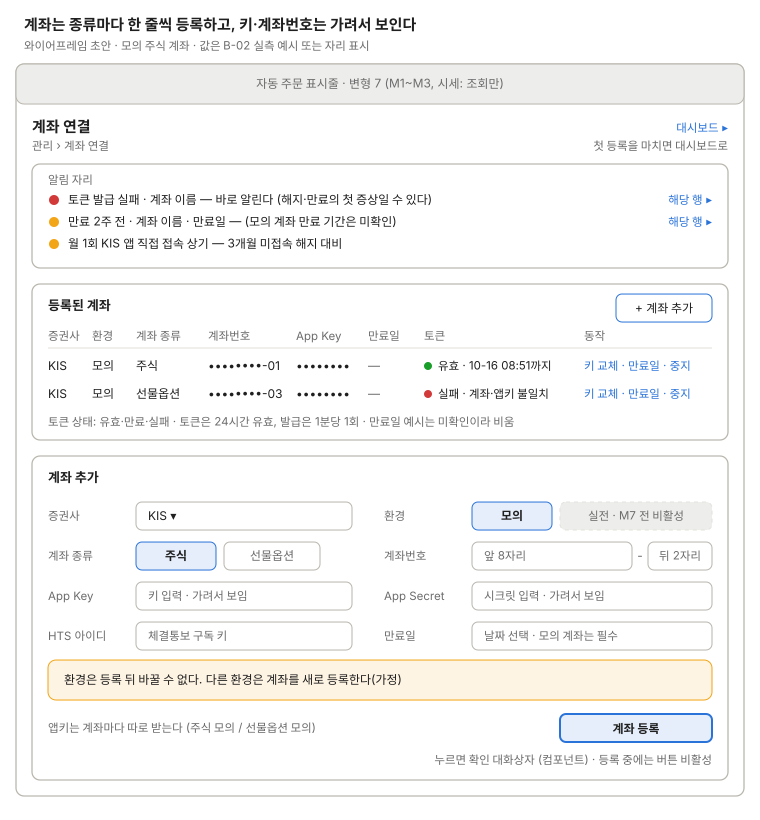

계좌 연결
계좌 종류마다 레코드 하나를 등록한다. 앱키가 계좌마다 따로이기 때문이다(B-02 확정).

계좌 종류마다 한 줄씩 등록하고, 환경은 등록 뒤 바꿀 수 없으며 키·계좌번호는 가려서 보인다.
계좌 등록 버튼은 확인 대화상자를 거친다(요약: 환경·종류·계좌번호 끝 2자리, 등록 뒤 환경을 못 바꾼다는 안내). 환경 "실전"은 M7 전까지 비활성이다(결정 2026-10-16). 목록은 상태 열 없이 토큰 상태(유효·만료·실패)를 보인다(결정 2026-10-16). 행마다 키 교체·만료일 수정·사용 중지를 둔다(제안).
쓰는 공통 UI
화면 틀 · 자동 주문 표시줄 (변형 7, "시세: 조회만") · 확인 대화상자 (계좌 등록)
상태
| 상태 | 보일 것 |
|---|---|
| 계좌 없음(첫 사용) | 목록 자리에 "등록된 계좌가 없습니다" 안내, 계좌 추가 폼을 펼쳐 둔다. 대시보드 링크는 첫 등록 뒤에 보인다 |
| 등록 중 | 확인 대화상자에서 확인한 뒤 버튼 비활성 + "등록 중". 토큰 발급·잔고 조회로 키를 확인한다 |
| 토큰 유효 | 초록 점 + "유효 · 만료 시각까지" |
| 토큰 만료 | 경고 점 + "만료" (24시간 유효) |
| 실패: 키 틀림 | 빨강 점 + "키 틀림", 알림 자리에 같은 줄 |
| 실패: 계좌·앱키 불일치 | 빨강 점 + "계좌·앱키 불일치" (INVALID_CHECK_ACNO, B-02 실측) |
| 발급 제한 대기 | 발급은 1분당 1회(EGW00133). "1분 뒤 다시 발급" 안내 |
| 만료 2주 전 | 알림 자리에 경고 줄 + 해당 행 링크. 모의 계좌 만료 기간은 미확인 |
| 실전 선택 | M7 전까지 비활성, "M7 전 비활성" 문구 |
화면 규칙
- 보여 줄 것: 증권사, 환경(모의/실전), 계좌 종류(주식/선물옵션), 계좌번호 8자리 + 상품코드 2자리, App Key, App Secret, HTS 아이디(체결통보 구독 키), 만료일(모의)
- 데이터:
broker_accounts. 토큰은 24시간 유효, 발급은 1분당 1회 - 주의: 환경은 레코드에서 바꿀 수 없다. 키·계좌번호는 가려서 보인다. 토큰 발급 실패와 만료 2주 전을 알린다